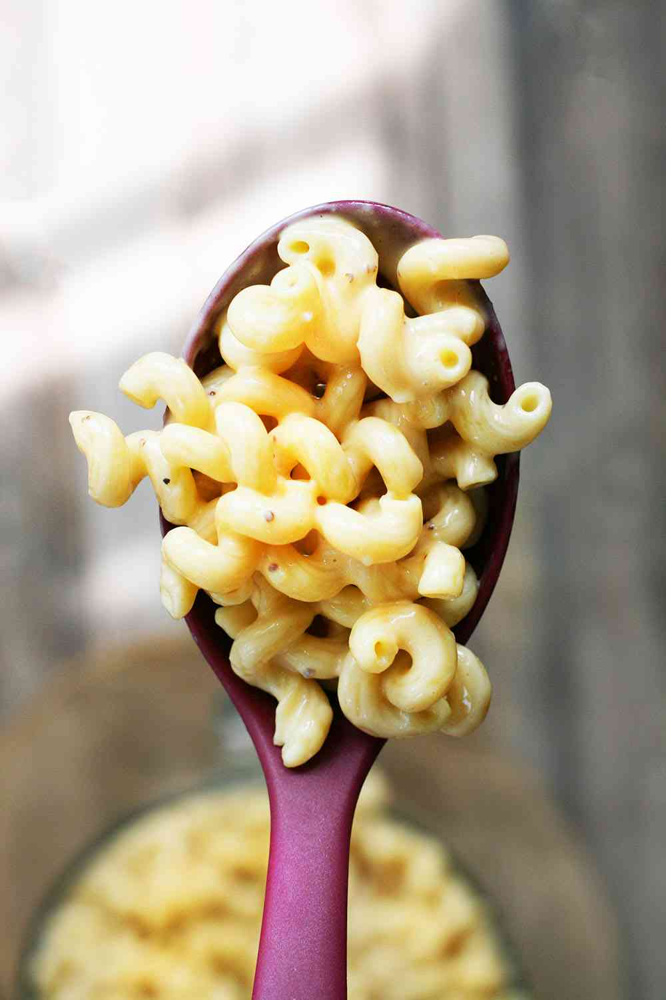

My kitchen is 8 feet wide and 10 feet long. That's 80 square feet. Less than the size of a standard parking space.
I know this because I measured it last year when I was considering a renovation that I can't afford. The tape measure said 96 inches by 120 inches. I wrote the numbers in my notebook, calculated the square footage, and then put the tape measure away because the only thing worse than a tiny kitchen is knowing exactly how tiny it is.
The house was built in 1892. The kitchen was added sometime in the 1920s, which explains why it has exactly two electrical outlets, a window that doesn't open, and a layout that seems designed to maximize the number of times you bump your hip on the corner of the counter.
I have three children. A husband. A cat that refuses to stay off the counters.
And I run a website about recipe scaling from a home office that is technically the laundry room.
People ask me how I do it. They ask me where I test my recipes. They ask me how I bake a 200‑serving mac and cheese in a kitchen that can barely fit a sheet pan.
The answer is: I don't. I test small. I scale on paper. And my tiny kitchen is actually the best thing that ever happened to my baking.
Let me explain.
The Layout (A Comedy of Errors) Let me walk you through my kitchen. You'll understand why I'm so obsessive about mise en place.
The counters: I have exactly 36 linear inches of usable counter space. That's one standard cutting board and maybe room for a mixing bowl. The rest of the counter is taken up by a toaster (which we use twice a year), a coffee maker (non‑negotiable), and a fruit bowl that my children empty within hours of being refilled.
The stove: A four‑burner gas range from the 1990s. The oven temperature fluctuates by about 25 degrees depending on how many times you open the door. I've learned to bake with an oven thermometer and a lot of patience.
The sink: A single basin, 18 inches wide. You cannot fit a large stock pot in it. I wash large pots in the bathtub. I am not joking.
The refrigerator: Under‑counter. Half the size of a normal fridge. I have to shop for ingredients every two days because there's no room to store anything.
The storage: Cabinets that were installed in 1972 and have never been replaced. The doors don't close properly. One of them is held shut with a bungee cord.
I could complain about this kitchen for hours. And I do. Frequently. My husband has heard the "we need a bigger kitchen" speech approximately 400 times in the 12 years we've lived here.
But here's the thing I realized about five years ago: My tiny kitchen forces me to be a better baker.
The Mise en Place Obsession When you have no counter space, you cannot measure as you go. There's no room to put the flour bag next to the sugar bag next to the butter. You have to measure everything before you start, put each ingredient in its own container, and stack those containers on top of each other if necessary.
I own 24 small glass bowls. Ramekins, technically—the kind you'd use for crème brûlée. I bought them at a restaurant supply store for $1.50 each.
Before I start any recipe—any recipe at all—I measure every ingredient into its own ramekin.
For a chocolate cake, my counter looks like this:
Ramekin 1: 280g (9.9oz) flour
Ramekin 2: 200g (7oz) sugar
Ramekin 3: 170g (6oz) butter, cubed
Ramekin 4: 100g (3.5oz) chocolate, chopped
Ramekin 5: 3 eggs (still in shells, but next to their ramekin)
Ramekin 6: 5g (0.18oz) baking powder (measured, not eyeballed)
Ramekin 7: 3g (0.1oz) salt
Ramekin 8: 8g (0.3oz) vanilla extract
That's eight ramekins on a counter that can barely fit four. So I stack them. Two layers. A pyramid of ingredients.
My husband walks into the kitchen and sees this tower of glass bowls and says, "Are you baking or performing surgery?"
"Both," I say. "Baking is surgery with better smells."
The mise en place isn't just about space. It's about error prevention. When I scaled that chocolate chip cookie recipe to 96 and forgot to adjust the baking soda, I didn't have my mise en place set up. I was rushing. I measured directly into the mixing bowl. I didn't double‑check.
If I had measured the baking soda into its own ramekin—if I had looked at 2 teaspoons of baking soda sitting in a little glass bowl and thought, that seems like a lot—I might have caught my mistake.
Now I never skip mise en place. Not for a single cookie. Not for a single serving of anything.
The Small‑Batch Testing Advantage When you have a tiny kitchen, you cannot test recipes at full scale. There's simply no room to make 96 cookies at once. You couldn't fit the ingredients on the counter, let alone the baking sheets.
So I test small. Then I scale.
My testing process:
Start with a recipe that yields 6‑12 servings.
Bake it. Take notes. (What went wrong? What went right?)
Adjust the recipe. Bake it again. Take more notes.
Repeat until the recipe is perfect at the small scale.
Use the math to scale up to 24, 48, 96 servings.
Test one scaled batch at 24 servings to confirm the math works.
Scale further if needed.
This process takes longer than testing at full scale. But it wastes less ingredients. And it's more accurate because I can focus on flavor at the small scale without worrying about logistics.
Here's an example.
Last month, I was developing a gluten‑free chocolate cake recipe. The original small‑batch recipe (8 servings) took me 11 tries to get right. Eleven. That's 88 servings of failed cake.
If I had tested at 24 servings, I would have wasted 264 servings. If I had tested at 96 servings, I would have wasted over 1,000 servings.
My tiny kitchen saved me from that waste. I physically could not make a 96‑serving test batch even if I wanted to. So I was forced to test smart.
The final recipe? Perfect. I scaled it to 24 servings for a friend's birthday party. Then to 50 servings for a community event. The math worked because the small‑batch foundation was solid.
The 3‑Kid Chaos Factor I have three children: 12, 9, and 6. They are wonderful. They are also chaos incarnate.
The 12‑year‑old (Eliza) is a teenager now, which means she appears in the kitchen only when she smells chocolate. She's actually a good baker—she scaled a pancake recipe by herself last year, and I nearly cried with pride.
The 9‑year‑old (Miles) is my assistant. He loves measuring. He will weigh flour for hours if I let him. His scaling factor is always 1x because he hasn't learned multiplication yet, but he's getting there.
The 6‑year‑old (Cora) is a tornado. She runs through the kitchen at full speed, grabs things off counters, and once dropped an entire bag of powdered sugar onto the floor. The kitchen looked like a snow globe had exploded.
Baking with three kids in a tiny kitchen is an exercise in patience. But here's what I've learned: Chaos forces systems.
When you have no space and three small humans running around, you cannot afford to be disorganized. Every tool has a place. Every ingredient is measured in advance. Every step is planned.
I have a laminated checklist taped to the inside of a cabinet. It says:
Olivia's Pre‑Bake Checklist:
Scale on counter (calibrated)
All ingredients in ramekins
Oven preheating (thermometer visible)
Pans greased and lined
Kids occupied (tablet or outdoor)
Coffee made (non‑negotiable)
If I miss any of these steps, the bake falls apart. I learned this the hard way—through collapsed cakes, burnt cookies, and at least one incident where I forgot to add sugar to a cheesecake.
The Organization That Saves My Sanity Because my kitchen is small, everything has to earn its place.
I have a rule: If I haven't used it in six months, it goes to the basement.
This rule has exiled many items. The bread machine I used twice in 2014. The waffle iron that made uneven waffles. The three mismatched bundt pans that someone gave me as a wedding gift.
What stays:
My scale. Digital, 0.1g precision. Lives on the counter because I use it every day.
My ramekins. 24 of them, stacked in a cabinet.
My notebook. A Leuchtturm1917 dotted journal. Lives on the counter next to the scale.
My measuring spoons. Two sets—one for dry, one for wet.
My oven thermometer. Hangs from the oven rack.
My stand mixer. Lives in the pantry because it's too big for the counter. I carry it out when I need it.
That's it. Everything else is negotiable.
I used to keep more stuff. A food processor. A blender. An immersion circulator (sous vide phase, 2018). But the clutter stressed me out more than the convenience helped.
Now when I walk into my kitchen, I see exactly what I need. Nothing more.
The Victorian Window and the Flour Dust My kitchen has one window. It faces the backyard. The window doesn't open—the paint has sealed it shut for probably 50 years—but it lets in morning light.
On baking days, that light catches the flour dust in the air. My kitchen always has a thin layer of flour on the counters. I wipe it down after every bake, but it comes back immediately. It's like the flour has decided to move in permanently.
My husband says the flour dust is my signature scent.
My kids say the kitchen smells like home.
I say the flour dust is proof that I'm actually baking. Not just talking about baking. Not just writing about baking. Actually doing it, in a too‑small kitchen, with three kids and a cat and a bungee‑cord cabinet.
I could have a bigger kitchen. We could renovate. We could move to a house with an island and a double oven and a refrigerator the size of a small car.
But I'm not sure I want to.
Why Small Is Better for Scaling Here's the counterintuitive thing I've learned: Scaling recipes is easier when you're used to constraints.
When you have no space, you learn to batch. You learn to stage. You learn to do the math before you turn on the oven.
Those skills are the exact same skills you need to scale a recipe to 200 servings.
A cook with a giant kitchen—with unlimited counter space and a six‑burner range and a walk‑in pantry—might never learn to plan. They might just keep making more space instead of making a plan.
But a cook with a tiny kitchen? They have no choice. They have to plan. They have to calculate. They have to think about equipment limits and timing and batch size.
That's why I think my small kitchen made me who I am: a scaling obsessive.
I literally cannot bake a 96‑cookie batch in my kitchen. There's not enough counter space for the ingredients. There's not enough room in the fridge for the dough. There's not enough space in the oven for more than 12 cookies at a time.
So I have to scale in batches. Four batches of 24 cookies each. The math is the same—I just execute it in pieces.
That's the skill I use when I cater events. My kitchen doesn't magically grow when I'm cooking for 200 people. I still have the same tiny stove, the same small fridge, the same limited counter space. I just batch everything. Stage everything. Plan everything.
Constraint is a gift. It forces you to think.
The Pan Size Substitution Tool (Born from a Too‑Small Oven) My oven can fit exactly one 9x13 pan. That's it. One.
When I need to bake a recipe that calls for two 9x13 pans, I have to substitute. I use a different pan shape that fits my oven, or I bake in batches.
I built the Pan Size Substitution Tool specifically because I was tired of doing the volume math by hand every time I needed to swap a pan.
My tiny oven forced me to learn pan substitution. Now it's a skill I teach to everyone.
The Emotional Reality of a Small Kitchen I'm not going to pretend that I love my tiny kitchen. Some days I hate it.
I hate that I can't have a dishwasher. I hate that I have to wash large pots in the bathtub. I hate that every time I open the oven door, it hits the counter on the other side of the aisle.
But I've made peace with it.
The kitchen is not the point. The food is the point. The math is the point. The people I feed—my family, my students, the readers of this website—they don't care how many square feet my kitchen has. They care that the cake is moist and the cookies are chewy and the mac and cheese is creamy.
And I can deliver those things. From 80 square feet. With a bungee cord holding a cabinet shut.
That's not a limitation. That's a flex.
What I Tell Myself on Bad Days On the days when I drop an egg on the floor and the cat tries to eat it, when my 6‑year‑old runs through the kitchen and knocks over my ramekin tower, when my oven temperature is 25 degrees off and I don't notice until the cake is already burnt—
On those days, I sit on the kitchen floor (the only open space in the room) and I remind myself:
This kitchen has produced hundreds of recipes. Thousands of servings. Dozens of scaling breakthroughs.
The wedding cake that collapsed? That was in a professional kitchen, 20 times the size of this one. The space didn't save me. The math did.
The mac and cheese for 200? That started in this kitchen, on this stove, with one pot and a lot of planning. The space didn't limit me. The math freed me.
So I'll keep my tiny kitchen. I'll keep my ramekins and my scale and my bungee‑cord cabinet.
And I'll keep baking.
A Quick Reference for Small‑Kitchen Scalers If you're baking in a tiny kitchen like mine, here's what I recommend:
Problem Solution No counter space Mise en place in ramekins. Stack them. Small oven Bake in batches. Use pan substitution. Tiny fridge Shop every 2 days. Plan your bakes. One sink Wash as you go. Large pots in bathtub (not kidding). Kids underfoot Bake when they're asleep or at school. No dishwasher Use paper plates for tasting. Save water for dishes. The most important rule: Do the math before you start. Always. Every time. No exceptions.
Because when your kitchen is tiny, you cannot afford to waste space on mistakes.
— Olivia
P.S. My 9‑year‑old just read this over my shoulder and said, "Mom, you forgot to mention the time Cora put the cat in the mixing bowl." I did not forget. I am saving that story for another article.
"The Emotional Reality"Ingredient Density Lookup ✅